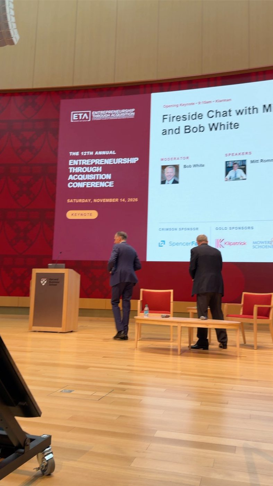
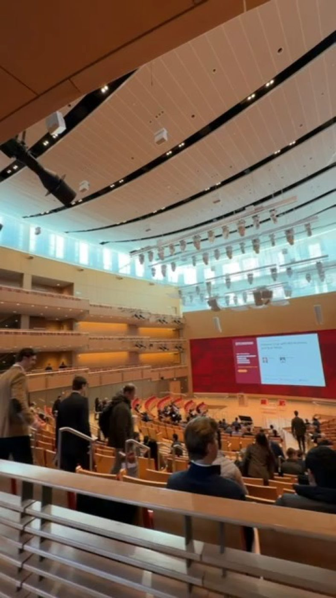
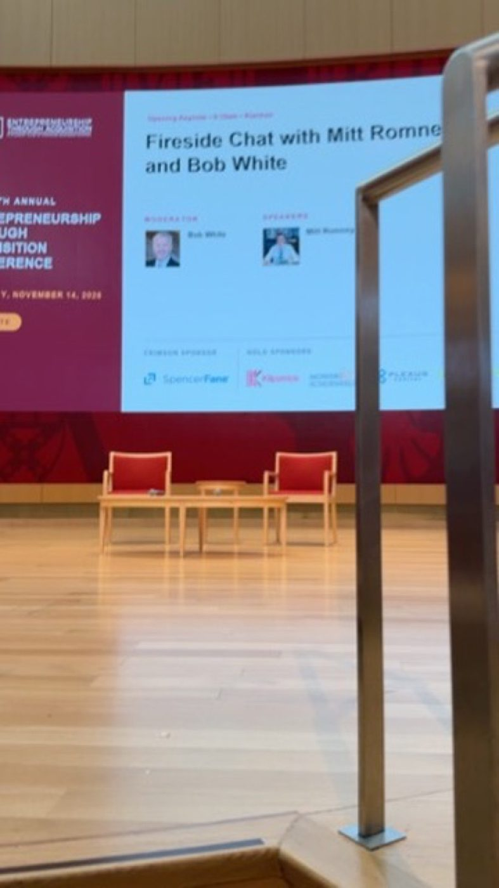

Opening keynote
What Mitt Romney taught a room of searchers about partners, character and courage
Romney's message to people who want to buy and run a business: pick your partners with care, fix real businesses instead of gambling on new ones, and let character and purpose lead.

The short version of what Mitt Romney told us: choose your partners carefully, buy and improve a real business instead of betting on a brand new one, and let character and purpose guide every hire and every deal. He backed it up with stories from Bain Capital, the Olympics and the governor's office, and I left wanting to do more, and to do it better.
Here is how this page works. First, where I was sitting. Then four topics from the chat, each with a few points and a reason it matters to someone searching for a business to buy. Last, five lessons I am taking home. Everything below is my own paraphrase of what I understood, and where I could not check a detail I say so.
Where I was sitting
Luke Tatone of Searchfunder invited me to the 12th Annual HBS Entrepreneurship Through Acquisition Conference at Harvard Business School on Saturday 14 November 2026, and the overview page tells the story of the whole day. My task was to attend as many sessions as I could and learn from people who have done it. I am an operator searching for a small business to buy, and I wrote this for people like me, who wonder how to pay for it and how to start. The message under everything I heard that day: it is possible, and here is how others did it.

The opening session was a fireside chat. Bob White, an HBS faculty member who is listed among Bain Capital's early team on Wikipedia's Bain Capital page, asked the questions. Mitt Romney answered. Romney was Governor of Massachusetts from 2003 to 2007 and US Senator from Utah from 2019 to 2025, and in between he co-founded Bain Capital in 1984 and ran the 2002 Winter Olympics in Salt Lake City, according to Wikipedia's Mitt Romney page.
The simple version. Bain Capital is a private equity firm. That means it raises money from investors, buys whole companies, tries to make them run better, and later sells them. Romney helped start it. Searchers do the same thing on a much smaller scale: they find one small business, buy it and run it.
Romney moved between business and public life more than once.
Read top to bottom. Navy dots mark business, copper dots mark public life.
What I went to learn
I wanted to hear how someone who built a firm from nothing thinks about the first decisions: who to go into business with, what to buy, and what kind of leader to be. Romney's answers fell into four topics.
Topic 1: Start with the partners, not the deal
Point 1: The idea came from a client. Romney said that while he was a consultant, a client asked why he was working for a fee when he could own something himself. He then talked with Bill Bain, who agreed to set up a private equity arm. At that point nobody had a settled name or model for it. This matters because it shows how an idea can begin as a plain question from someone who believes in you.
Point 2: The best advice was about partners. Romney said the firm's lawyer gave them a piece of advice that stayed with him for his whole career: choose your partners carefully. He meant the people who supply the money, not only the team. Bain Capital avoided big institutions that wanted frequent valuation updates and leaned on the firm for fast results. It looked for wealthy individuals and families who were entrepreneurial, had real experience and could bring deals. White added that these investors shared the firm's investment horizon.
Point 3: Tell investors why you and why now. White framed the question every fundraiser faces, why you and why now, and gave the Bain Capital reasoning as an example. As he told it, the consulting firm's clients did better than their competitors, but the firm could not invest in its own clients for legal reasons. A separate fund could apply the same management work to companies it owned. The lesson for a searcher: have a clear reason why you are the right person and why this is the right moment.
For scale, Wikipedia's Business career of Mitt Romney page says Bain Capital's first fund in 1984 was $37 million, raised entirely from private individuals. Bain Capital's own About page now puts the firm at more than $200 billion of assets under management (the money it invests for others), about $230 billion as shown, with no date on the page.

The simple version. Money is not just money. The people who give it to you become part of your business for years. Romney said to pick the ones who are patient, who know the work, and who can help.
For searchers and investors: why partner choice maps to funded and unfunded searches
White asked the room who was on which kind of search. As I noted it, most people were on an unfunded search, which means the searcher pays their own way with no investors committed yet. A few were raising a fund, and some in the room provide financing.
Romney's partner advice applies to both sides. If you raise money, you are choosing partners who will sit next to you for years, so look for experience, patience and help beyond the check. If you are an investor, the same test applies to the operator. Nothing here is a rule about who to pick. It is how Romney framed the question, and a searcher should weigh it against their own situation.
Topic 2: Run a real business instead of starting one
Point 1: Stop doing venture. Romney said Bain Capital's early mix was roughly half venture capital (money for brand new companies) and half buyouts (buying existing companies). The lesson he drew: starting a business leans heavily on luck, while improving a business that already runs leans on skill. The firm's real edge was knowing how to fix and improve operating businesses, so it focused there. He named Staples as the venture that worked. Per Wikipedia's Bain Capital page, Bain invested $4.5 million in Staples in 1986. He said several others did not work.
Point 2: The turnaround story. Romney told of an oil company division that was losing money and that Bain Capital bought from its parent. As he told it, they put money into research and development, closed one of its three factories because of labor costs, and within a year it was making a profit. A public source describes the deal differently, so treat this as Romney's recollection, not a checked fact.
This matters to a searcher because it is the same bet we make: an existing business has customers, suppliers and staff on day one.
The simple version. Starting a lemonade stand takes luck, because nobody knows if the street will want lemonade. Buying a stand that already has regulars, then running it better, depends more on your skill.
Topic 3: Character and purpose come before cleverness
Point 1: The Marriott story. Romney told of Bill Marriott visiting people in every department of a hotel, including the front desk, kitchen and laundry, and asking about their families and hopes. Romney's reading was that real care for people comes from the character of the leader at the top. Marriott's annual report for 2017 lists about 177,000 employees (Marriott 10-K). Romney said that even in a company that large, he saw one leader's character, and the people that leader attracts, shaping the culture. He also described Marriott asking for a receipt for a small highway toll, which Romney took as a sign of a company that cares about every dollar.
Point 2: The investing rule that followed. Romney said that if an operator lacked the right qualities of character, he did not want to invest with them. He said he weighed the leader's quality alongside how successful the business was. He turned this toward us: our own character will shape whatever we end up leading.
Point 3: Leaving Bain Capital for the Olympics. Bain Capital was doing very well, and Romney said leaving made no business sense. After a scandal around the Games, someone from Utah asked him to take over. He said no at first, then came to see the Games as a chance to serve a purpose bigger than money, and agreed. Per Wikipedia, he served as president and CEO of the organizing committee from February 1999 to August 2002. Romney himself said about three years.
Point 4: What the Olympics taught him about teams. About 2,000 people worked together for roughly three years, as he described it, and all of them knew their jobs would end after the Games. So nobody chased a promotion or a raise, and people rushed to help each other. He called it one of his best management experiences. His takeaway: a purpose bigger than money lines people up.
Point 5: Write down your core values. Romney described an exercise at Bain Capital, run with two psychologists. Each partner listed five people they most admired and three qualities of each, then circled the qualities that repeated. The partners found they shared the same values, such as service, love, honor and integrity. One partner whose values differed left later. The psychologists' point, as Romney relayed it, was that living against your own values makes you less happy and less successful.
White added what he thought made the Bain Capital partnership work: pay spread widely among people who add value, real responsibility with room to challenge decisions, and learning who your partners are when things go badly.
The simple version. A company is mostly the habits of the person in charge. Before you choose a business, a partner or a manager, ask what that person is like on a bad day.
For searchers and investors: turning the values exercise into a partner screen
The exercise is easy to copy. Each person writes five people they admire and three qualities of each. Circle the repeats. Compare lists with a prospective partner, an investor or the founder you plan to buy from. If the lists barely overlap, you have learned something before money is on the table.
This is my adaptation, not something Romney prescribed for searchers. He described it as something his partners did together.
Topic 4: What he learned running Massachusetts
Romney said many of the same lessons apply in government. Four came from him and a fifth from White's story.
Point 1: Choose partners again. He said his lieutenant governor, Kerry Healey, was highly effective at things he could not do himself, so the partner rule applied outside business too.
Point 2: Use data. Romney said business is full of people who study numbers, while government has data that decision makers rarely read. Lawmakers wanted smaller classes. He said he plotted class size against test scores across 85 school districts and found no link. What did matter, he said, was whether teachers came from the top of their college classes. His response was to raise pay for new teachers. I could not verify his 85-district analysis, so this is his account. On results, Commonwealth Beacon reports that Massachusetts has led the national NAEP tests (a national school test) overall since 2005, though it ranks lower once results are adjusted for student backgrounds, so I would not read it as simply number one.
Point 3: Be bold. Romney said Tom Stemberg, the founder of Staples, urged him to get everyone health insurance. NHPR reports Romney saying the same about Stemberg's push. Romney said it looked impossible without new taxes, but his team found a way. He put coverage at 97% to 98% of residents. The state's 2025 survey shows 97.9% today, which is a current rate, not necessarily the one he reached as governor.
Point 4: Play to your strengths. Many universities and medical schools sit within about 10 miles of Boston, so Romney said the state held its tax incentives for biotech, not for any business. He said the state is now first or second with California. A 2025 ranking from Genetic Engineering and Biotechnology News puts Boston and Cambridge first and the San Francisco Bay Area second, though it ranks metro areas, not states.
Point 5: Ask who disagrees. White recalled Romney stopping a cabinet meeting, when everyone agreed on a transit extension, to ask who disagreed. Romney recalled hearing Robert Gates, the former US Secretary of Defense, say that the most important quality in a president is recognizing you are not the smartest person in the room. Romney said it applies in business too.
The simple version. Look at the real numbers before you decide. Then do the brave thing, but aim it at what you are already good at. And when everyone agrees, ask who does not.
The Senate, Solamere and the closing charge
On the Senate, Romney kept it short. He said he enjoyed it and valued being able to work across party lines to get things done.
On Solamere Capital, I had come in thinking it might be his next venture. It is not. Its website says it was formed in 2008, and Marriott's 2018 proxy statement says he has been its executive partner and group chairman since March 2013. Romney described it as active today, with a network of about 300 investor-partners, meaning current and former CEOs and inventors who can help the companies it wants to buy. The website says 200+ strategic investors, so the numbers differ. He gave one example of a company it bought that repairs and services elevators. I cannot confirm that deal, so it is his anecdote.
His closing charge was the part I will remember. Romney said the character of a nation is shaped by its leaders, and he walked through examples from John Adams, Abraham Lincoln, Harry Truman and Ronald Reagan. Then he told the room that we are leaders, and that what we become will be shaped by who we are. He wanted us to make a lot of money, and to do it with character, core values and great partners.
Romney's lessons link in a chain, from choosing partners to acting with courage.
Six lessons as Romney told them, in the order I link them. Copper marks the one he kept coming back to: partners.
The chain above has six links. The last two, data and courage, share one lesson below, which is why I list five.
What I am taking home
- Pick partners before you pick a deal. Romney called partner choice the advice that stayed with him through his career. I will treat every investor, advisor and co-searcher as a long relationship, not a transaction.
- Favor running a real business over a gamble. He said improving an existing business leans on skill, not luck. That fits the path of buying a small business, though it is his experience, not a guarantee for any deal.
- Judge the person at the top. Marriott's habits, as Romney told it, shaped the culture of a huge company. I will look hard at the owner and the team before I look at the spreadsheet.
- Put purpose and values in writing. The Olympics showed him a shared purpose beats money. The values exercise gives me a practical way to test a partner early.
- Look at the data, be bold, and invite dissent. Check the numbers, aim your boldness at what you already do well, and ask who disagrees before you commit.
I walked out inspired to do more. The stories on that stage were about people who built things over many years, and I left encouraged that the first steps are open to anyone willing to choose partners and values with care. Next, the financing session covers how searchers put the money for a deal together, and the roll-ups panel shows five operators who chose their partners in very different ways.
Sources
- Wikipedia, Mitt Romney.
- Wikipedia, Business career of Mitt Romney.
- Wikipedia, Bain Capital.
- Bain Capital Private Equity, About us.
- Marriott International, Form 10-K for fiscal 2017, Item 1, 2018.
- Wikipedia, Kerry Healey.
- Commonwealth Beacon, National scores show Mass. students leading, with big asterisks.
- NHPR (NPR), Mitt Romney finally takes credit for Obamacare, 2015-10-23.
- Massachusetts Center for Health Information and Analysis, Massachusetts Health Insurance Survey, 2025.
- Genetic Engineering & Biotechnology News, Top 10 U.S. Biopharma Clusters 2025, 2025.
- Wikipedia, Robert Gates.
- Solamere Capital, Solamere Capital website.
- U.S. Securities and Exchange Commission, Marriott International 2018 proxy statement (DEF 14A), 2018.
Written as an attendee. Speaker remarks are paraphrased in my own words. Educational only, not investment, legal or tax advice. Not affiliated with or endorsed by Harvard Business School or the HBS ETA Club. Facts as of 15 November 2026.